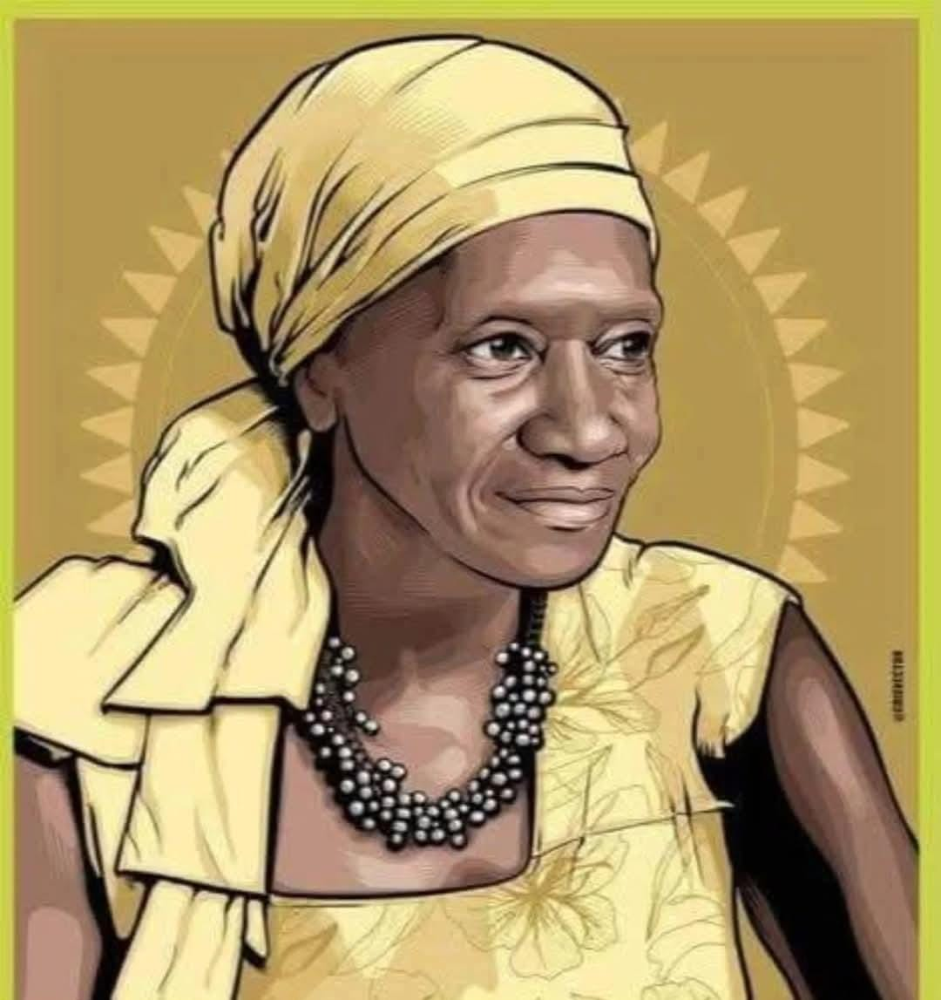
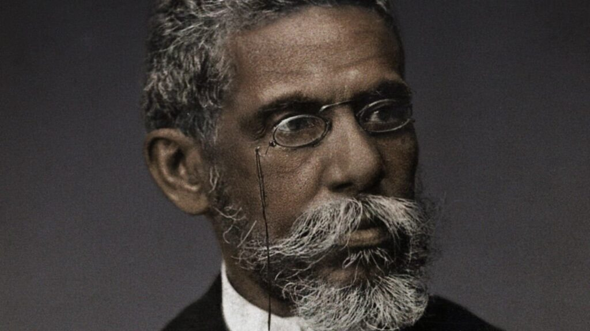

ESCRITORAS BRASILEIRAS
Carolina Maria de Jesus
Uma escritora que transformou suas experiências de vida em literatura, dando visibilidade à realidade das populações marginalizadas.
Conheça sua história →
CULTURA • HISTÓRIA • IDENTIDADE
Vozes que contam histórias, preservam memórias e transformam gerações.
EXPLORE NOSSO CONTEÚDO
ESCRITORAS BRASILEIRAS
Uma escritora que transformou suas experiências de vida em literatura, dando visibilidade à realidade das populações marginalizadas.
Conheça sua história →IDENTIDADE E MEMÓRIA
Sua escrita valoriza a ancestralidade, a memória e as experiências da população negra brasileira.
Conheça sua história →
LITERATURA BRASILEIRA
Um dos principais nomes da literatura brasileira, conhecido por suas obras e pela análise crítica da sociedade.
Conheça sua história →SAIBA MAIS
A Literatura Afro-Brasileira reúne produções literárias que expressam experiências, identidades, culturas e perspectivas relacionadas à população negra no Brasil.
Essas obras abordam temas como ancestralidade, racismo, resistência, memória, pertencimento e valorização cultural.
Por meio da escrita, diferentes autores contribuem para ampliar a diversidade de vozes e narrativas presentes na literatura brasileira.
Explorar obrasFONTES DE PESQUISA
Obras e materiais utilizados como referência para a construção deste conteúdo.
JESUS, Carolina Maria de. Quarto de despejo: diário de uma favelada. São Paulo: Francisco Alves, 1960.
EVARISTO, Conceição. Ponciá Vicêncio. Belo Horizonte: Mazza Edições, 2003.
REIS, Maria Firmina dos. Úrsula. 1859.
ASSIS, Machado de. Dom Casmurro. Rio de Janeiro: Garnier, 1899.
CUTI. Literatura negro-brasileira. São Paulo: Selo Negro, 2010.